Geoprocessing tutorials
Learn the workflow, step by step
These tutorials describe practical workflows by Andressa using Google Earth Pro and QGIS, covering environmental and land-use applications. They are aimed at students, collaborators and professionals.
This page is still under construction — more tutorials will be added.
Tutorial
Mapping with Google Earth Pro
Objective: compare land-use change in a new allotment in São Miguel do Oeste–SC, between 2008 and 2018.
1–4 Select the area and map the territory
Select the area of interest, then map the total territory, the blocks and the streets.
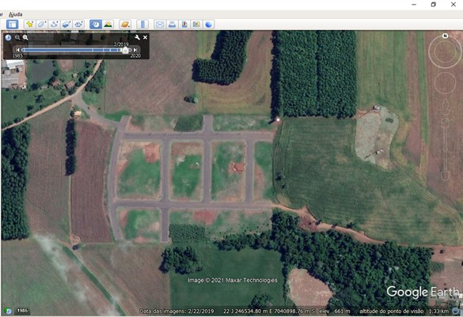
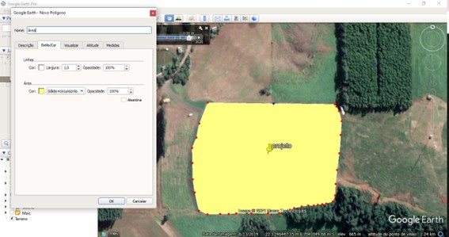
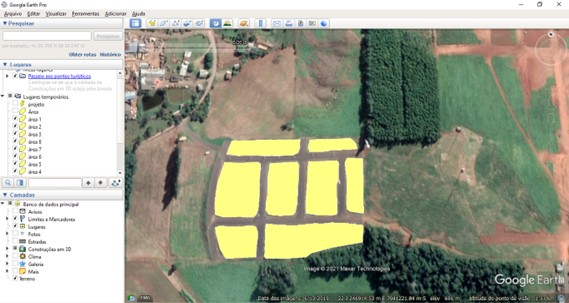
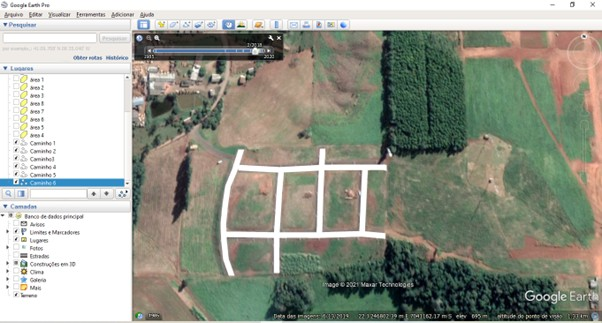
5–8 Switch to 2008 imagery and delimit land cover
Change to the 2008 historical imagery and delimit eucalyptus, native forest and open field.
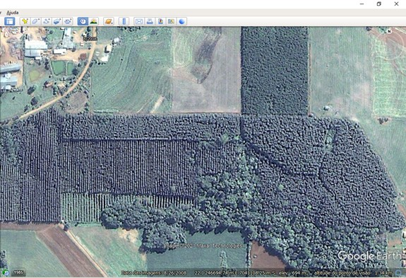
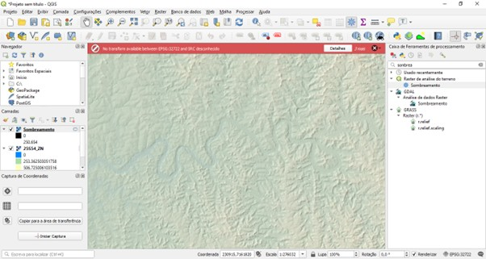
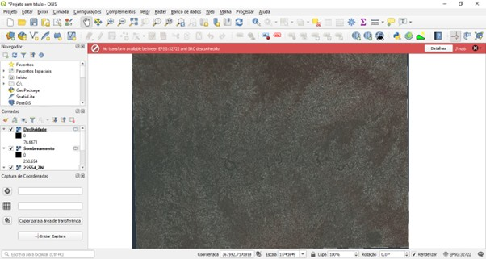
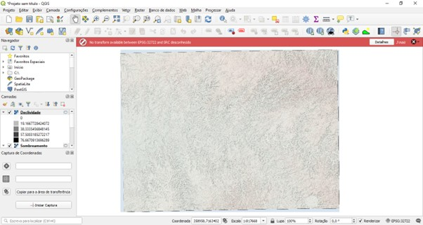
+ Related figures
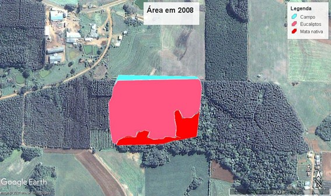
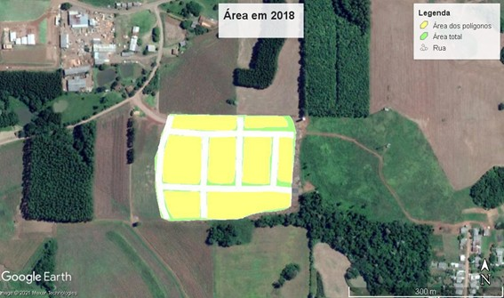
Tutorial
Mapping areas with QGIS
Objective: import the Google Earth allotment into QGIS and compute areas and lengths, with proper symbology.
1–11 Workflow
- Import the KML/KMZ file from Google Earth.
- Add an OpenStreetMap basemap with the QuickMapServices plugin.
- Calculate the area of each block.
- Review the statistics.
- Measure the streets.
- Style the layers.
- Split the UR and UM blocks.
- Apply graduated and categorized symbology.
- Add the Google Satellite basemap.
- Digitize extra polygons.
- Create a main-road line layer.
The final map combines area classes and land-use categories.
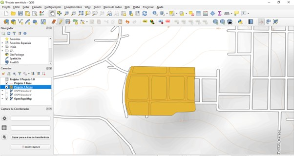
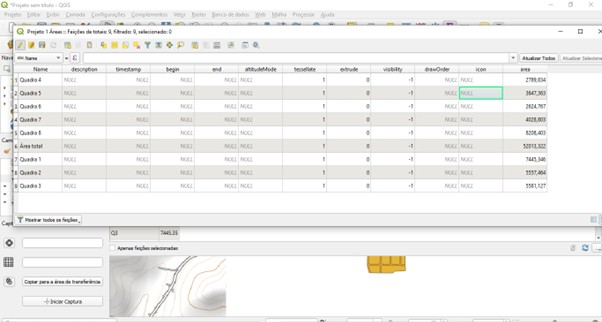
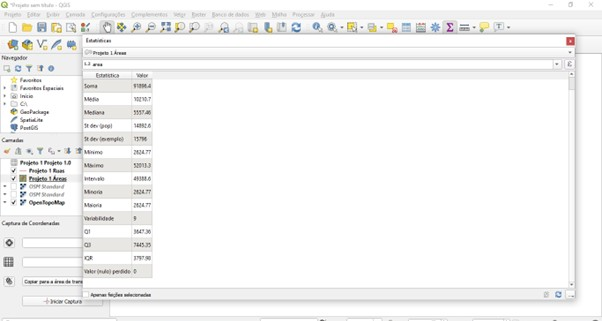
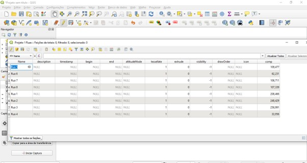
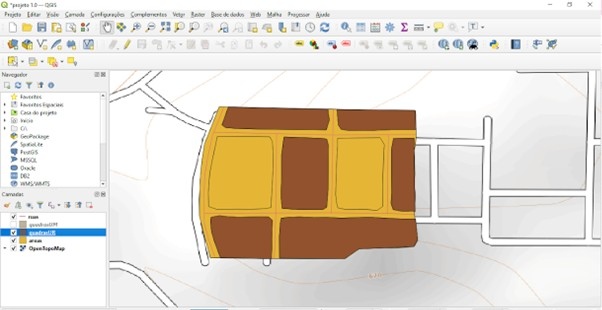
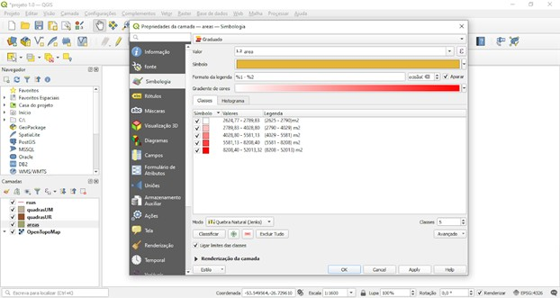
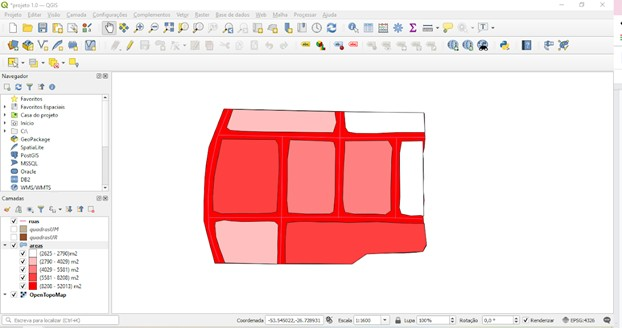
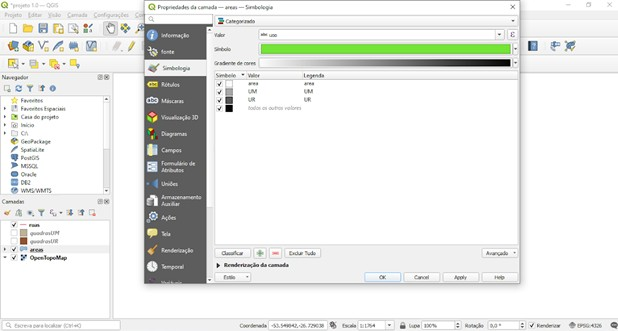
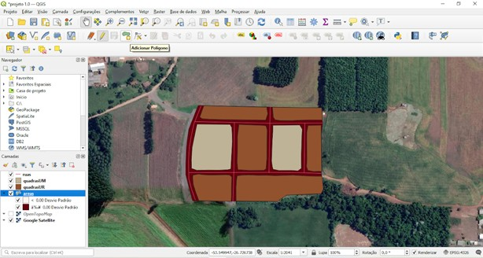
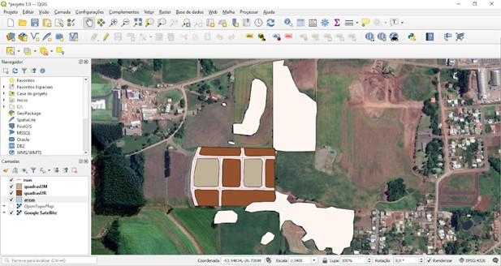
Tutorial
Land-use segmentation with QGIS
Objective: create land-use segments from satellite imagery using semi-automatic classification.
A Prepare the data
Load and prepare the satellite imagery.
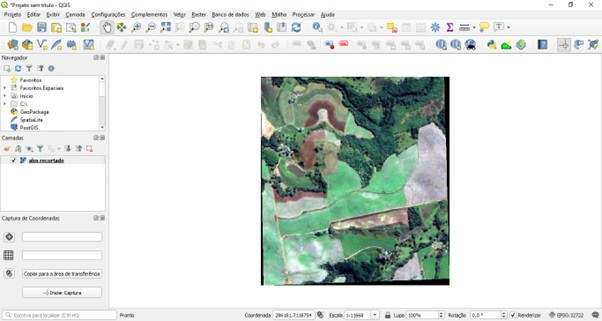
B Install the dzetsaka plugin
Install the dzetsaka classification plugin in QGIS.
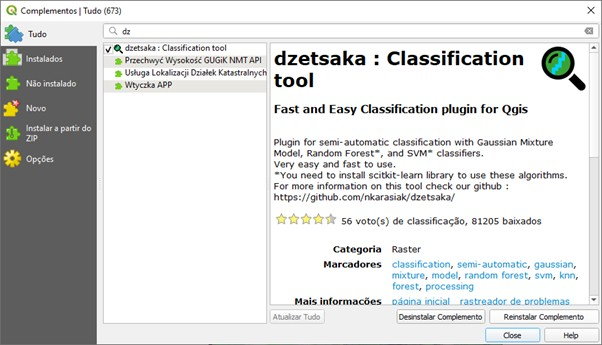
C Create the training shapefile
Create a shapefile with a classe field to hold the training samples.
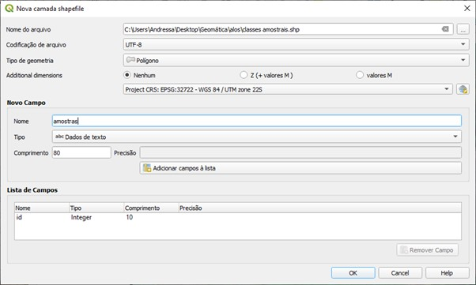
D Digitize the classes
Draw training polygons for each class:
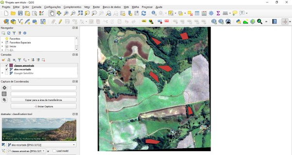
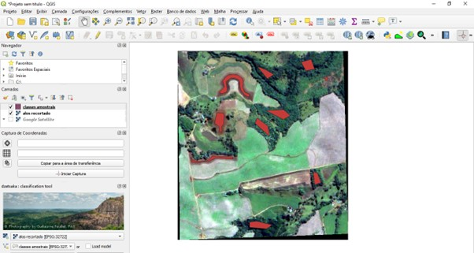
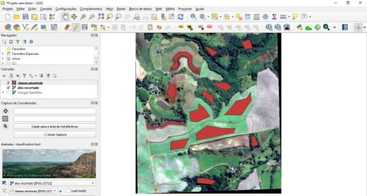
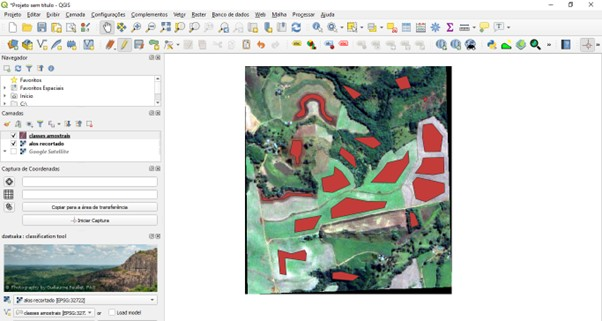
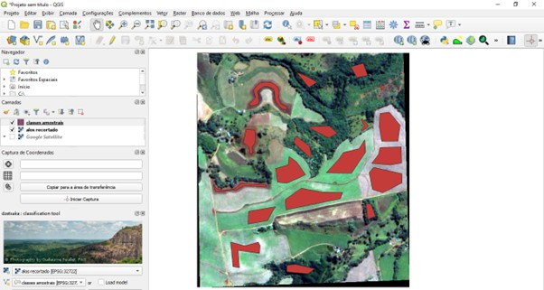
E Run the classification
Run the classifier with the training samples.
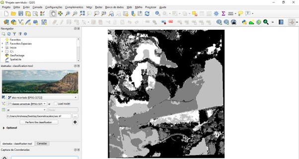
F Style the output
Apply symbology to the classified raster to produce the final land-use map.
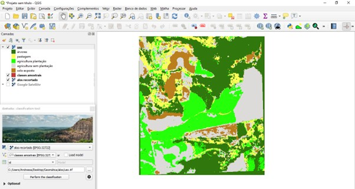
Back
Back to the portfolio
See the full list of projects, skills and contacts on the main page.